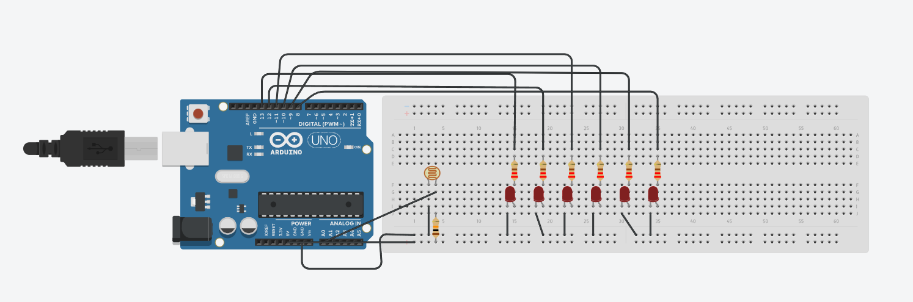
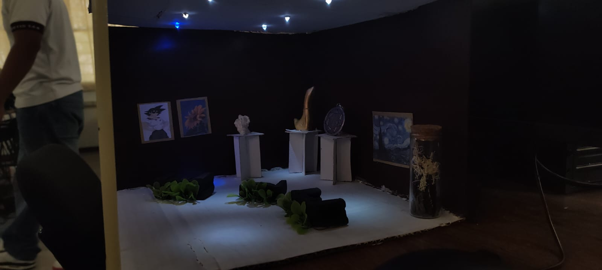

El sistema combina una fotorresistencia (LDR) con Arduino para automatizar el encendido de 6 LEDs según la cantidad de luz ambiental detectada.
Fotorresistencia (LDR)
Sensor pasivo cuya resistencia varía según la luz incidente. Con mucha luz su resistencia cae (~100Ω–1kΩ); en oscuridad sube (~1MΩ). Trabaja en un divisor de voltaje para generar una señal analógica leída por Arduino en el pin A0.
Arduino UNO
Actúa como cerebro del circuito. Lee el valor analógico del pin A0 (0–1023) y lo compara con el umbral definido en el código. Si hay poca luz, activa los pines digitales 8–13 que controlan los LEDs.
6 LEDs en Paralelo
Todos reciben el mismo voltaje (5V). Cada uno lleva su propia resistencia de 220Ω–330Ω. Si uno falla, los demás continúan funcionando. Todos se encienden o apagan en simultáneo según la lectura de la LDR.
🌞 Con luz brillante
- La LDR baja su resistencia.
- El voltaje en A0 es alto (cercano a 5V).
- Arduino lee un valor analógico elevado (≥ 500).
- Los pines 8–13 permanecen en LOW → LEDs apagados.
🌙 Con poca luz
- La LDR sube su resistencia.
- El voltaje en A0 es bajo (cercano a 0V).
- Arduino lee un valor analógico reducido (< 500).
- Los pines 8–13 pasan a HIGH → LEDs encendidos.
💡 ¿Por qué conectar los LEDs en paralelo y no en serie?
En paralelo, cada LED recibe 5V independientemente. Si uno se daña, los demás siguen funcionando. En serie, el voltaje se divide entre todos (5V / 6 = ~0.83V, insuficiente para encenderlos) y si uno falla, el circuito completo se interrumpe.
Esquema de conexión de la LDR, el Arduino y los 6 LEDs en paralelo sobre protoboard.

Diagrama Tinkercad: LDR en divisor de voltaje → A0 · 6 LEDs con resistencias → pines 8–13
🔌 Conexión de la LDR (divisor de voltaje)
- Un extremo de la LDR → 5V
- Otro extremo → unión con resistencia de 10kΩ → GND
- El punto medio (unión LDR + R10k) → pin A0 del Arduino
- Este voltaje variable es la "señal" que lee Arduino
💡 Conexión de los 6 LEDs
- Pin digital (8, 9, 10, 11, 12 ó 13) → Resistencia 220Ω
- Resistencia → ánodo del LED (pata larga)
- Cátodo del LED (pata corta) → GND
- Todos comparten el mismo GND del Arduino
⚡ Cálculo de resistencia para los LEDs
Con 5V de fuente, caída de voltaje del LED ≈ 2V y corriente deseada de 10–15mA:
R = (Vfuente − VLED) / I = (5V − 2V) / 0.015A = 200Ω
Se usa 220Ω (valor estándar más cercano) para proteger el LED sin reducir demasiado su brillo.
El sketch lee el valor analógico de la LDR y decide si encender o apagar los 6 LEDs automáticamente según el umbral definido.
int ledrojo2 = 12;
int ledrojo3 = 11;
int ledrojo4 = 10;
int ledrojo5 = 9;
int ledrojo6 = 8;
int lecturasensor;
int valorLuz = 0;
int umbral = 500; // Ajusta según tu entorno
void setup() {
pinMode(ledrojo, OUTPUT);
pinMode(ledrojo2, OUTPUT);
pinMode(ledrojo3, OUTPUT);
pinMode(ledrojo4, OUTPUT);
pinMode(ledrojo5, OUTPUT);
pinMode(ledrojo6, OUTPUT);
Serial.begin(9600);
}
void loop() {
lecturasensor = analogRead(A0);
Serial.println(lecturasensor);
if (lecturasensor < umbral) {
// Oscuro → LEDs encendidos
digitalWrite(ledrojo, HIGH);
digitalWrite(ledrojo2, HIGH);
digitalWrite(ledrojo3, HIGH);
digitalWrite(ledrojo4, HIGH);
digitalWrite(ledrojo5, HIGH);
digitalWrite(ledrojo6, HIGH);
} else {
// Luz → LEDs apagados
digitalWrite(ledrojo, LOW);
digitalWrite(ledrojo2, LOW);
digitalWrite(ledrojo3, LOW);
digitalWrite(ledrojo4, LOW);
digitalWrite(ledrojo5, LOW);
digitalWrite(ledrojo6, LOW);
}
delay(500);
}
🔧 Funciones clave explicadas
- lecturasensor — almacena el valor analógico 0–1023 leído desde A0.
- umbral = 500 — punto de corte entre "oscuro" e "iluminado". Ajustar según el ambiente.
- digitalWrite(HIGH) — envía 5V al pin → LED enciende.
- digitalWrite(LOW) — corta el voltaje → LED se apaga.
- Serial.println() — imprime el valor en el Monitor Serial para calibración en tiempo real.
- delay(500) — espera 500ms antes de volver a leer para evitar lecturas erráticas.
📈 ¿Cómo calibrar el UMBRAL?
- Abre el Monitor Serial a 9600 baudios.
- Observa el valor con la iluminación normal del aula.
- Cubre la LDR con la mano y anota el valor mínimo obtenido.
- Pon el UMBRAL entre ambos valores para distinguir "oscuro" de "iluminado".
- Un valor de 500 suele funcionar bien en interiores. Si los LEDs se quedan siempre encendidos, bájalo; si no encienden, súbelo.
🔢 Pines utilizados
• ledrojo → Pin 13 | ledrojo2 → Pin 12 | ledrojo3 → Pin 11
• ledrojo4 → Pin 10 | ledrojo5 → Pin 9 | ledrojo6 → Pin 8
• LDR → Pin A0 (analógico) | GND compartido entre todos los LEDs
Galería de arte en miniatura donde los LEDs controlados por la fotorresistencia simulan la iluminación automatizada de una sala de exposiciones.
🎨 Concepto del proyecto
Se diseñó una galería minimalista dentro de un espacio reducido. Las luces LED integradas replican el sistema de iluminación inteligente de una galería real: se activan automáticamente cuando la sala se oscurece, recreando la experiencia de una exposición de arte con control ambiental de iluminación.
Estructura principal
Se construyó la caja de la galería con cartón rígido y arauco pintado en tonos oscuros y amaderados para una estética refinada. El techo se dejó en color blanco para reflejar mejor la luz de los LEDs hacia el interior. Las paredes y el piso se aseguraron con pegamento y refuerzos internos de cartón.
Pedestales y esculturas
Se fabricaron pequeños pedestales con papel cascarón, doblado y pegado para crear formas cúbicas firmes. Sobre ellos se colocaron esculturas modeladas con jabón y materiales reciclados, dando al espacio un carácter artístico y artesanal auténtico.
Instalación de iluminación LED
Los LEDs se instalaron en el techo de la maqueta, distribuidos estratégicamente para crear puntos de atención sobre cada pieza expuesta y dispersar luz uniforme en todas las áreas. Los cables se ocultaron dentro de las paredes para mantener la estética limpia.
Obras en las paredes
Las pinturas fueron impresas en papel fotográfico y pegadas en marcos pequeños sobre las paredes de la galería para simular cuadros reales. La selección incluye obras de distintos estilos para enriquecer la exposición temáticamente.
Detalles decorativos
Se añadieron plantas artificiales distribuidas en el piso y un frasco decorativo con materiales naturales, aportando un contraste orgánico al espacio oscuro. Estos elementos equilibran la frialdad de las paredes negras con texturas y colores cálidos.
Integración del circuito
El Arduino y la protoboard se colocaron en la parte trasera o inferior de la maqueta. La fotorresistencia se posicionó en un punto donde puede detectar la luz exterior de la sala. Al cubrir o descubrir la galería, los LEDs del techo responden automáticamente.
✅ Resultado obtenido
La maqueta logra una simulación fiel de una galería de arte con iluminación automatizada. Cuando el ambiente se oscurece, los LEDs del techo se encienden de forma autónoma, destacando las obras y esculturas. El proyecto combina con éxito electrónica, programación y diseño artesanal.
Fotografías del diagrama de conexión y la maqueta terminada.

📋 Conclusiones de la práctica
- La fotorresistencia es un sensor sencillo pero muy efectivo para automatizar sistemas de iluminación.
- El divisor de voltaje es fundamental para convertir la variación de resistencia en una señal analógica leíble por Arduino.
- Conectar los LEDs en paralelo garantiza uniformidad de brillo e independencia entre ellos.
- El valor del UMBRAL debe calibrarse según el entorno específico donde se usa el circuito.
- Este principio se aplica en sistemas reales como sensores crepusculares, luces de estacionamiento y alumbrado público automático.